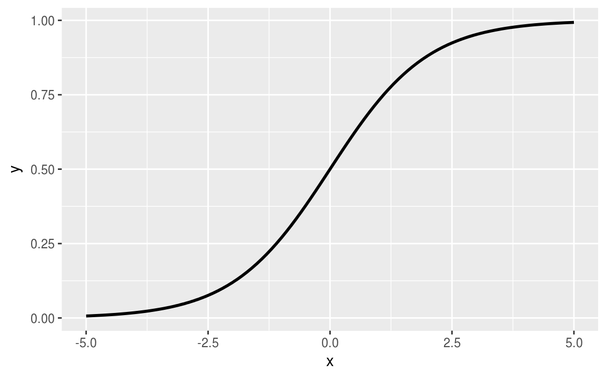

Clase 7 Regresión logística 2
7.1 Incertidumbre en la estimación
Podemos ajustar varios modelos para mostrar que hay incertidumbre en el ajuste del modelo. En el rango de los datos, la línea sólida muestra el mejor ajuste para una regresión logística, y las líneas de color gris clarito muestran la incertidumbre en el ajuste.
invlogit <- function(x){
exp(x)/(1+exp(x))
}
M <- 50
N <- nrow(datos_2)
fit.1 <- glm(vote ~ income, data = datos_2, family=binomial(link="logit"))
modelos <- 1:M %>%
map(~glm(vote ~ income, data = sample_n(tbl = datos_2, size = N, replace = T),
family=binomial(link="logit"))) %>%
map(summary) %>%
map("coefficients") %>%
map_df(function(x){data_frame(intercept=x[1,1], income=x[2,1])})
x <- seq(0.5,5.5, length.out = 100)
graf_data <- lapply(1:M, function(i){
invlogit(modelos$intercept[i] + modelos$income[i]*x)
})
graf_data <- as.data.frame(Reduce(f = cbind, x = graf_data))
colnames(graf_data) <- paste0('V',1:M)
graf_data$x <- x
graf_data$y <- invlogit(fit.1$coef[1] + fit.1$coef[2]*x)
g <- ggplot(graf_data, aes(x=x))
for(i in 1:M){
g <- g + geom_line(data = graf_data, aes_string(y = paste0('V',i)), colour = 'grey', size=0.2)
}
g <- g + geom_line(data = graf_data, aes(y = y), colour = 'black', size=1)
g + xlab("x") + ylab("p(y=1|x)")7.2 Función logística
Recordemos: \(\mbox{logit}^{-1}\) es la función de transformación de los predictores lineales a las probabilidades que se utilizan en la regresión logística.
\[ \mbox{logit}^{-1}(x) = \mbox{log}\left(\dfrac{x}{1-x}\right) \]ggplot(data.frame(x=seq(-5,5,by=0.05)), aes(x=x)) +
stat_function(fun = invlogit, xlim = c(-5,5), size=1)
Regresemos al ejemplo del ajuste de regresión logística y los coeficientes:
fit.1 <- glm(vote ~ income, data = datos_2, family=binomial(link="logit"))
fit.1$coefficients
#> (Intercept) income
#> -1.402 0.326Podemos ver la probabilidades que predice el modelo graficando la función con sus respectivos coeficientes:
ggplot(datos_2, aes(x = income, y = vote)) +
geom_jitter(width = 0.3, height = 0.08, size = 0.1) +
stat_function(fun=function(x){invlogit(fit.1$coef[1]+fit.1$coef[2]*x)}, xlim=c(0.1,5.5), size=0.5) +
geom_segment(aes(x=-0.01, y=0.5, xend=4.31, yend=0.5), linetype = 2, color = 'lightpink') +
geom_segment(aes(x=4.31, y=-0.01, xend=4.31, yend=0.5), linetype=2, color = 'lightpink') +
geom_point(aes(x=4.31, y=0.5), color = 'red') +
scale_x_continuous(breaks=c(1,2,3,4,4.31,5),
labels=c("(menor ingreso)", "", "", "", "4.31", "(mayor ingreso)")) +
scale_y_continuous(breaks=c(0,0.5,1), labels=c("Clinton (0)", "0.5", "Bush (1)")) +
xlab("Categoría de ingreso") + ylab("Voto")
\[ \mbox{logistic regression model: }\; y = \mbox{logit}^{−1} (−1.40 + 0.33x) \]
La probabilidad de predicción es \(0.5\) cuando \(−1.40 + 0.33x = 0\), que es \(x = 1.40/0.33 = 4.31\). La pendiente de la curva de regresión logística es mayor en este punto intermedio.
La función \(\mbox{logit}^{-1}(x)=\dfrac{e^x}{1+e^x}\) transforma valores continuos en \((0,1)\), lo cual es necesario, ya que las probabilidades deben estar entre \(0\) y \(1\).
El modelo
\[ P(y_i=1)=\mbox{logit}^{-1}(X_i\beta), \]
se puede expresar como
\[ \begin{eqnarray*} P(y_i=1) &=& p_i\\ \mbox{logit}(p_i) &=& X_i\beta. \end{eqnarray*} \]
Vamos a invertir la función \(\mbox{logit}^{-1}\):
\[ \begin{eqnarray*} f(x) = \dfrac{e^x}{1+e^x} &=& y\\ e^x &=& y (1+e^x)\\ e^x (1-y)&=&y\\ e^x &=& \dfrac{y}{1-y}\\ x &=& \mbox{log}\left(\dfrac{y}{1-y}\right) \end{eqnarray*} \]
Preferimos trabajar con \(\mbox{logit}^-{1}\) porque es más natural pensar en la transformación del predictor lineal a las probabilidades, que al revés.
Como la función logística inversa no es lineal, entonces la diferencia esperada en \(y\) correspondiente a una diferencia fija en \(x\) no es constante:
\(\mbox{logit}(0.5) = 0\), y \(\mbox{logit}(0.6) = 0.4\). Agregar \(0.4\) en la escala de logit corresponde a un cambio de 50% a 60% en la escala de probabilidad.
\(\mbox{logit}(0.9) =2.2\), y \(\mbox{logit}(0.93) = 2.6\). Agregar \(0.4\) en la escala logit corresponde a un cambio de sólo 90% a 93%.
\(\mbox{logit}(0.953) = 3\). Agregar \(0.4\) más corresponde a un incremento en la probabilida de 93% a 95.3%.
En general, los cambios de probabilidad se comprimen en los extremos de la escala de logit, y esto es necesario para mantener las probabilidades entre 0 y 1.
7.3 Interpretación de los coeficientes
Debido a esta no linealidad, los coeficientes de regresión logística pueden ser difíciles de interpretar. Vamos a utilizar resúmenes numéricos para hacer las interpretaciones.
7.3.1 Evaluar en (o alrededor de) la media
La curva de la función logística requiere que elijamos dónde evaluar los cambios, si queremos interpretar en la escala de probabilidad. Podemos comenzar evaluando en la media de los datos de entrada.
- Como en regresión lineal, el intercepto se puede interpretar suponiendo valores de \(0\) para los otros predictores. Cuando la interpretación de \(0\) en los demás valores no es interesante, o bien, \(0\) no está en el rango de las variables (como en el ejemplo de votaciones, donde el ingreso está en una escala del 1-5), se puede evaluar el intercepto en otro punto. Por ejemplo, podemos evaluar la probabilidad de voto por Bush en la categoría central de del ingreso y obtener \[\mbox{logit}^{−1}(−1.40 + 0.33 \cdot 3) = 0.40.\]
O podemos evaluar la probabilidad del voto por Bush \(P(y_i=1)\) en la media del ingreso de los encuestados, \[\mbox{logit}^{-1}(-1.4+0.33\cdot \bar{x}).\]
invlogit(coef(fit.1)[1] + coef(fit.1)[2]*mean(datos_2$income))
#> (Intercept)
#> 0.401En este ejemplo, \(\bar{x} = 3.1\), que da como resultado \(P(\mbox{vota Bush}) = 0.40\) en la media de \(x\).
Una diferencia de \(1\) (1 más en la escala de ingreso de \(1\) a \(5\)) corresponde a una diferencia positiva de \(0.33\) en la probabilidad (logit) de voto por Bush. Hay dos maneras convenientes de resumir esto directamente en términos de probabilidades:
Podemos evaluar cómo cambia la probabilidad (logit) ante un cambio unitario con respecto a la media de \(x\). Como \(\bar{x}=3.1\), entonces podemos evaluar la función de regresión logísta en \(x=3\) y \(x=2\). La difrerencia en \(P(y=1)\) que corresponde a agregar \(1\) a \(x\) es: \[ \mbox{logit}^{−1}(−1.40+0.33·3)−\mbox{logit}^{−1}(−1.40+0.33·2) = 0.08.\] Una diferencia de 1 en la categoría de ingresos corresponde a una diferencia positiva del 8% en la probabilidad de apoyar a Bush.
En vez de considerar un cambio discreto en \(x\) podemos calcular la derivada de la curva logística en algún valor central, en este caso la media \(\bar{x}=3.1\). Diferenciando la función \[\mbox{logit}^{−1}(\alpha + \beta x)\] con respecto a \(x\) resulta en \[\beta e^{\alpha+\beta x}/(1 + e^{\alpha +\beta x})^2\]. El valor del predictor lineal en el valor central de \(\bar{x}=3.1\) es \[−1.40+0.33·3.1 = −0.39,\] y la pendiente de la curva, el “cambio” en \(P(y = 1)\) por unidad pequeña de “cambio” en x, en este punto es \[0.33e^{-0.39}/(1 + e^{-0.39})2 = 0.13.\]
Para este ejemplo, la diferencia en la escala de probabilidad es el mismo valor de 0.13 (con un lugar decimal); esto es típico, pero en algunos casos donde una diferencia de unidad es grande, la diferenciación y la derivada pueden dar respuestas ligeramente diferentes. Sin embargo, siempre serán el mismo signo.
Podemos comparar la diferencia en la escala de probabilidad (0.08) con la derivada (0.13). Estas generalmente son similares, pero pueden no serlo cuando la diferencia de una unidad es grande.
7.3.2 La regla de “dividir entre 4”
La curva logística tiene mayor inclinación en el centro, en el punto en el cual \[\alpha + \beta x = 0,\] de tal forma que \[\mbox{logit}^{-1}(\alpha + \beta x) = 0.5.\] La pendiente de la curva, o sea la derivada de la función logística, es máxima en este punto y su valor máximo es \(\beta/4\).
Como una regla general, se puede tomar cualquier coeficiente de la regresión logística (que no sea el constante o intercepto) y dividirlos entre 4 para obtener una cota superior de la diferencia en probabilidad cuando se varía \(x\) en una unidad.
Este límite superior es una aproximación razonable alrededor del punto medio de la curva logística, es decir, donde las probabilidades son cercanas a 0.5.
En el ejemplo anterior, el modelo
\[ P(\mbox{vota por Bush}) = \mbox{logit}^{-1}(-1.4 + 0.33\;\cdot \;\mbox{ingreso}), \]
y podemos dividir \(\beta/4\):
\[ \dfrac{\beta}{4}=\dfrac{0.33}{4}\approx 0.0825. \]
Este número ya lo habíamos obtenido antes analizando diferencias. Una diferencia de \(1\) en la categoría de ingreso corresponde a no más de un 8% de diferencia en la probabilidad de voto por Bush. Como los datos en este caso están cerca del punto del 50%, esta aproximación de 0.08 es cercana a 0.13, el valor de la derivada evaluada en la media (el punto medio en los datos), que puede no ser el punto medio en la curva.
7.3.3 Interpretación de los coeficientes como cocientes de momios
Otra forma de interpretar los coeficientes de la regresión logística es en términos de cocientes de momios.
Recordemos:
Si dos resultados tienen probabilidades \((p,1-p)\), entonces \(p(1-p)\) se llaman los momios.
Un momio de 1 es equivalente a una probabilidad de \(1/2\), es decir, ambos resultados (éxito y fracaso) son equiprobables.
Momios de 0.5 y 2 representan probabilidades de 1/3 y 2/3, respectivamente.
La razón de momios es un cociente de momios: \[\dfrac{p_1/(1-p_1)}{p_2/(1-p_2)}.\]
Una razón de momios de 2 corresponde a un cambio de \(p= 0.33\) a \(p = 0.5\) o un cambio de \(p = 0.5\) a \(p = 0.67\).
- Una ventaja de trabajar con razones de momios (en lugar de probabilidades) es que es posible escalar cocientes de momios indefinidamente sin los límites de (0,1) de las probabilidades. Por ejemplo, el cociente de momios de 2 a 4 incrementa la probabilidad de \(2/3\) a \(4/5\), si se duplican de nuevo los momios a 8, la probabilidad ahora es \(8/9\), y así sucesivamente.
Los coeficientes de regresión logística (exponenciados) se pueden interpretar como cocientes de momios. Por simplicidad, vamos a verlo con un modelo de un predictor, pero esta técnica (igual que las anteriores son útiles para cualquier predictor cuando se tienen varias variables).
El modelo es \[ \begin{eqnarray*} P(y_i=1|x) &=& \mbox{logit}^{-1}(\alpha+\beta x)\\ &=& \dfrac{e^{\alpha+\beta x}}{1+e^{\alpha+\beta x}}. \end{eqnarray*} \]
Además tenemos que
\[ P(y_i=0|x) = \dfrac{1}{e^{\alpha+\beta x}}. \]
Por lo tanto,
\[ \begin{eqnarray*} \dfrac{P(y_i=1|x)}{P(y_i=0|x)} &=& e^{\alpha + \beta x},\\ \mbox{log}\left[\dfrac{P(y_i=1|x)}{P(y_i=0|x)} \right] &=& \alpha + \beta x. \end{eqnarray*} \]
Sumar 1 a la variable \(x\) es equivalente a sumar \(\beta\) en ambos lados de la ecuación. Exponenciando nuevamente ambos lados, el cociente de momios se multiplica por \(e^\beta\).
Por ejemplo, si \(\beta=0.2\), entonces una diferencia unitaria en \(x\) corresponde a un cambio multiplicativo de \(e^{0.2}=1.22\) en los momios de éxito (con respecto a los chances de un fracaso).
7.4 Ejemplo: pozos en Bangladesh
Vamos a ver cómo utilizar un modelo logístico para poder tomar la decisión a nivel hogar en Bangladesh de si cambiar o no su fuente de agua potable.
7.4.1 Descripción del problema
Muchos de los pozos utilizados para el agua potable en Bangladesh y otros países del sur de Asia están contaminados con arsénico natural, afectando a aproximadamente 100 millones de personas.
El arsénico es un veneno acumulativo y la exposición aumenta el riesgo de cáncer y otras enfermedades, y se estima que los riesgos son proporcionales a la exposición.

wells_all <- read_csv("datos/wells_all.csv")ggplot(wells_all, aes(x = x, y = y)) +
geom_point(size = 0.05)
En esta gráfica podemos ver los pozos en un área de Araihazar upazila, Bangladesh. Los puntos representan pozos con arsénico mayor o menor que el estándar de seguridad de 0.5 (en unidades de cientos de microgramos por litro).
Los pozos están ubicados donde viven las personas. Las áreas vacías entre los pozos son principalmente tierras de cultivo.
Tanto pozos seguros como inseguros están mezclados en la mayor parte del área, lo que sugiere que los usuarios de pozos inseguros pueden recurrir a algún pozo seguro cercano.
ggplot(wells_all, aes(x = x, y = y, color = switch)) +
geom_point(size = 0.05) +
scale_color_manual(values = c("navyblue", "red"))
En este artículo reciente se discuten posibles soluciones que hagan uso de tecnologías desarrolladas recientemente: Win, T. L. (2017, August 28). Can technology help Bangladesh end mass arsenic poisoning?
Pueden leer también este boletín de la Organización Mundial de la Salud WHO.
7.4.2 Antecedentes del problema
Muchos de los pozos utilizados para el agua potable en Bangladesh y otros países del sur de Asia están contaminados con arsénico natural, afectando a aproximadamente 100 millones de personas. El arsénico es un veneno acumulativo y la exposición aumenta el riesgo de cáncer y otras enfermedades, y se estima que los riesgos son proporcionales a la exposición.
Causa del problema
La crisis de arsénico de Bangladesh se remonta a la década de 1970 cuando, en un esfuerzo por mejorar la calidad del agua potable y la lucha contra la diarrea, que era uno de los mayores asesinos de niños en el país, hubo inversiones internacionales a gran escala en la construcción de pozos tubulares. Se creía que los pozos proporcionarían suministros seguros para las familias, de lo contrario dependían del agua superficial sucia que mataba hasta 250,000 niños al año.
Cualquier localidad puede incluir pozos con arsénico, como se puede ver en la gráfica de arriba. La mala noticia es que incluso si el pozo de tu vecino es seguro, eso no significa que el tuyo esté a salvo. Sin embargo, la buena noticia es que si tu pozo tiene un nivel alto de arsénico, entonces probablemente puedas encontrar un pozo seguro cerca (si es que estás dispuesto a caminar la distancia y tu vecino está dispuesto a compartir 😅). (La cantidad de agua necesaria para beber es lo suficientemente baja como para que agregar usuarios a un pozo no agotara su capacidad, y el agua superficial en esta área está sujeta a contaminación por microbios, de ahí el deseo de utilizar agua de pozos profundos).
7.4.3 Metodología para abordar el problema
Un equipo de investigación de los Estados Unidos y Bangladesh midió todos los pozos y los etiquetó con su nivel de arsénico, así como una caracterización:
“seguro” (por debajo de 0.5 en unidades de cientos de microgramos por litro, un estándar para el arsénico en el agua potable), o
“inseguro” (por encima de 0.5).
Las personas con pozos inseguros fueron alentados a cambiar a pozos privados o comunitarios cercanos o a nuevos pozos de su propia construcción.
Unos años más tarde, los investigadores volvieron para averiguar qué vecinos habían cambiado de pozo. Hagamos un análisis de regresión logística para comprender los factores predictivos del cambio de pozo entre los usuarios de pozos no seguros.
Nuestra variable de respuesta es
\[ y_{i} = \left\{ \begin{array}{cl} 1 & \text{si la }\; i\text{-esima casa cambió de pozo},\\ 0 & \text{en otro caso.} \end{array}\right. \]
Consideramos las siguientes entradas:
Un término constante
La distancia (en metros) al pozo seguro conocido más cercano
El nivel de arsénico del pozo del encuestado
Si algún miembro del hogar está activo en organizaciones comunitarias.
El nivel de educación del jefe del hogar.
Primero ajustaremos el modelo usando la distancia al pozo más cercano y luego colocaremos la concentración de arsénico, la membresía organizacional y la educación.
7.4.4 Ajuste y resultados del modelo
Ajustamos la regresión logística con sólo un predictor:
wells <- read_csv("datos/wells.csv")
fit.1 <- glm(switch ~ dist, data = wells, family=binomial(link="logit"))
fit.1
#>
#> Call: glm(formula = switch ~ dist, family = binomial(link = "logit"),
#> data = wells)
#>
#> Coefficients:
#> (Intercept) dist
#> 0.60596 -0.00622
#>
#> Degrees of Freedom: 3019 Total (i.e. Null); 3018 Residual
#> Null Deviance: 4120
#> Residual Deviance: 4080 AIC: 4080El coeficiente para dist es -0.0062, que parece bajo, pero esto es engañoso ya que la distancia se mide en metros, por lo que este coeficiente corresponde a la diferencia entre, por ejemplo, una casa que está a 90 metros del pozo seguro más cercano y una casa que está a 91 metros de distancia.
Veamos la distribución de la distancia en los datos:
ggplot(wells, aes(x=dist)) +
geom_histogram(binwidth = 5)Parece razonable escalar la distancia en unidades de 100 metros:
wells <- wells %>%
mutate(dist_100 = dist/100)Volvemos a ajustar el modelo:
fit.2 <- glm(switch ~ dist_100, data = wells, family=binomial(link="logit"))
fit.2
#>
#> Call: glm(formula = switch ~ dist_100, family = binomial(link = "logit"),
#> data = wells)
#>
#> Coefficients:
#> (Intercept) dist_100
#> 0.606 -0.622
#>
#> Degrees of Freedom: 3019 Total (i.e. Null); 3018 Residual
#> Null Deviance: 4120
#> Residual Deviance: 4080 AIC: 4080Podemos ver gráficamente la regresión logística ajustada, \[ P(\mbox{cambie pozo}) = \mbox{logit}^{-1}(0.61 - 0.62 \cdot \mbox{dist_100}), \]
con los datos (jitter) superpuestos.
ggplot(wells, aes(x = dist_100, y = switch)) +
geom_jitter(width = 0.3, height = 0.08, size = 0.1) +
stat_function(fun = function(x){invlogit(fit.1$coef[1] + fit.2$coef[2]*x)}, xlim = c(-0.3,3.5)) +
scale_y_continuous(breaks = c(0,1), labels=c("No switch","Switch")) 
La probabilidad de cambio es aproximadamente del 60% para las personas que viven cerca de un pozo seguro, disminuyendo a un 20% para las personas que viven a más de 300 metros de cualquier pozo seguro. Esto tiene sentido: la probabilidad de cambio es mayor para las personas que viven más cerca de un pozo seguro.
7.4.5 Interpretación de los coeficientes
El término constante se puede interpretar cuando \(\mbox{dist_100 = 0}\), en cuyo caso la probabilidad de cambio es \(\mbox{logit}^{-1}(0.61) = 0.65\). Por lo tanto, el modelo estima un 65% de probabilidades de cambio si vives junto a un pozo seguro existente.
Podemos evaluar la “diferencia predictiva” con respecto a \(\mbox{dist_100}\) calculando la derivada en la media de \(\mbox{dist_100}\), que es 0.48 (es decir, 48 metros). El valor del predictor lineal aquí es \[0.61 - 0.62 \cdot 0.48 = 0.31,\] y entonces la pendiente de la curva en este punto es \[\dfrac{-0.62 \cdot e^{0.31}}{(1 + e^{0.31})^2} = -0.15.\] Por lo tanto, agregar 1 a \(\mbox{dist_100}\), es decir, sumar 100 metros a la distancia al pozo seguro más cercano, representa una diferencia en la probabilidad de 15% menos.
Con la “regla de dividir entre 4” nos da \[\dfrac{\beta}{4}=\dfrac{-0.62}{4} = -0.15.\] El resultado es el mismo al que se calculó usando la derivada porque la curva pasa aproximadamente por el punto del 50% de probabilidad (en realidad es 57%).
Además de interpretar su magnitud, podemos ver la significación estadística del coeficiente de distancia.
Utilizamos el procedimiento visto al principio:
M <- 500
N <- nrow(wells)
modelos_wells <- 1:M %>%
map(~glm(switch ~ dist_100, data = sample_n(tbl = wells, size = N, replace = T),
family=binomial(link="logit"))) %>%
map(summary) %>%
map("coefficients") %>%
map_df(function(x){data_frame(intercept=x[1,1], dist_100=x[2,1])})Vemos el resumen para la distancia:
summary(modelos_wells$dist_100)
#> Min. 1st Qu. Median Mean 3rd Qu. Max.
#> -0.985 -0.693 -0.623 -0.624 -0.560 -0.338Con cuantiles:
quantile(modelos_wells$dist_100, 0.025)
#> 2.5%
#> -0.835
quantile(modelos_wells$dist_100, 0.975)
#> 97.5%
#> -0.419La pendiente se estima bien, con un error estándar de sólo \(0.10\), que es muy pequeño en comparación con la estimación del coeficiente de \(-0.62\). El intervalo aproximado de 95% es \([-0.80, -0.42]\), que es claramente estadísticamente diferente de cero.